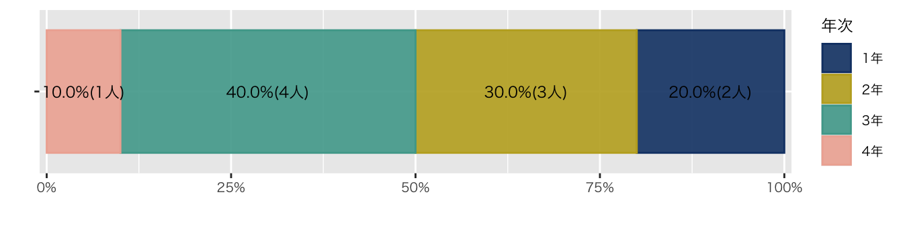
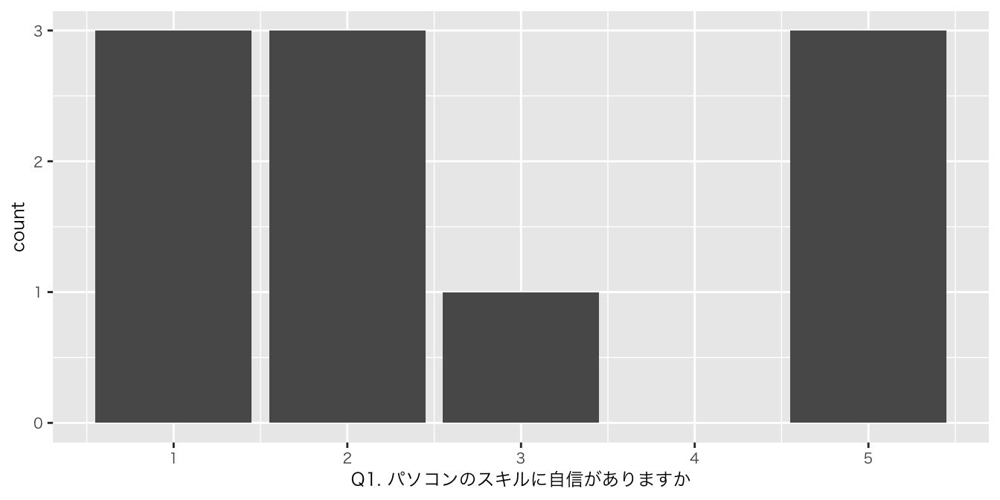
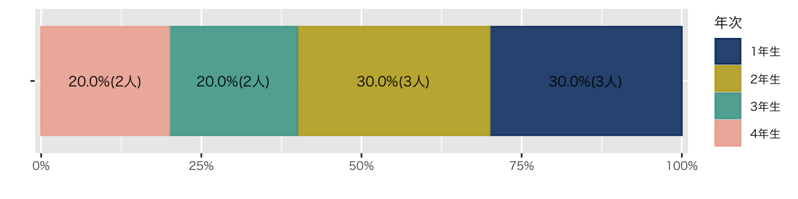
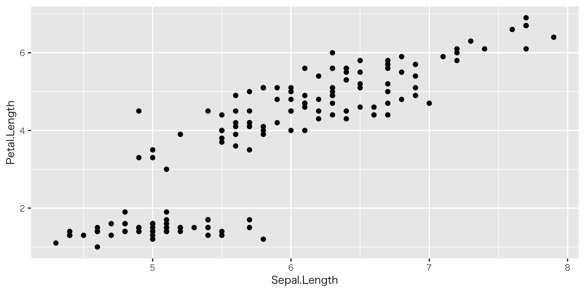

Ⅰ. なぜRなのか
- 無料
- コード
- 再現可能性
- 操作を忘れてもコードが残る
- ミスも再現できる
- 作業の効率化
- 安全性（元データは加工しない）
- ➡ 初期コストはすぐに回収できる
- 再現可能性
- 豊富な可視化ツール
- 豊富な出力パッケージ（quarto）
- Documents
- Presentations
- Dashboards
- Website
- ➡ YAML（ファイル冒頭部分）を変えるだけ
- 親切なコミュニティ
Cf. Microsoft Excel / SPSS / python
Ⅱ. シラバス
Ⅲ. サンプル
1. ggplot（受講者の属性）
df_受講生 %>% #対象とするデータフレーム
group_by(学域) %>% #学域でデータを分ける
summarise( #分けたデータの個数を数える
人数 = n()
) %>%
mutate(
比率 = 人数/sum(人数) #個数から比率を算出
) %>%
ungroup() %>% #グルーピングの解除
ggplot(aes(x = "", y = 人数, group = 学域)) + #図の台座
geom_col( #帯グラフ
aes(color = 学域, fill = after_scale(alpha(color, 0.9))),
position = position_fill(),
) +
geom_text( #帯グラフにテキストを貼る
aes(label = str_c(scales::percent(比率, accuracy = 0.1), "(", 人数, "人)")),
position = position_fill(reverse = FALSE, vjust = 0.5),
) +
scale_y_continuous( #Y軸の余白を詰める
expand = expansion(mult = c(0.01, 0.01)),
labels = scales::label_percent()) + #Y軸をパーセントにする
labs( #ラベル名（ここではxとyのラベルを削除）､凡例を変更
x = "",
y = "",
color = "学域" #凡例のラベルを「学域」に変更
) +
coord_flip() + #X軸とY軸を逆転させる
scale_color_paletteer_d("DresdenColor::briefcases") #配色変更
Code
df_受講生 %>% #対象とするデータフレーム
group_by(学域) %>% #学域でデータを分ける
summarise( #分けたデータの個数を数える
人数 = n()
) %>%
mutate(
比率 = 人数/sum(人数) #個数から比率を算出
) %>%
ungroup() %>% #グルーピングの解除
ggplot(aes(x = "", y = 人数, group = 学域)) + #図の台座
geom_col( #帯グラフ
aes(color = 学域, fill = after_scale(alpha(color, 0.9))),
position = position_fill(),
) Code
df_受講生 %>%
group_by(年次) %>%
summarise(
人数 = n()
) %>%
mutate(
比率 = 人数/sum(人数)
) %>%
ungroup() %>%
ggplot(aes(x = "", y = 人数, group = 年次)) +
geom_col(
aes(color = 年次, fill = after_scale(alpha(color, 0.9))),
position = position_fill(),
) +
geom_text(
aes(label = str_c(scales::percent(比率, accuracy = 0.1), "(", 人数, "人)")),
position = position_fill(reverse = FALSE, vjust = 0.5),
) +
scale_y_continuous(
expand = expansion(mult = c(0.01, 0.01)),
labels = scales::label_percent()) +
labs(
x = "",
y = "",
color = "年次"
) +
coord_flip() +
scale_color_paletteer_d("PrettyCols::Fun")
2. マップ
Code
leaflet() %>%
addTiles() %>%
setView(lng = 136.70847,
lat = 36.54517,
zoom = 18)高大接続コア・センター（インキュベーション施設3F）
Ⅳ. 図とデータ
教科書『データ分析のためのデータ可視化入門』
データを見る
- なぜデータを見るのか
- 悪いグラフのどこが悪いのか
- 円グラフは使わない
- 知覚とデータの可視化
- 誠実さと適切な判断に関する問題
- グラフに関する明確な思考
データの落とし穴
ミュラー『測りすぎ』
定量化とは魅力的なものだ。知識を整理して、単純化してくれるからだ。人や組織間で簡単に比較できる数値情報を提供してくれる。だが、この単純化はゆがみにつながる可能性がある。何かを比較可能にするというのは往々にして本来の概念、歴史、意味をはぎとってしまうことを意味するからだ。その結果、情報は問題の現実よりも確実で権威あるもののように見える。危険信号や曖昧さ、不確定要素ははぎとられる。特定の知識の体裁を整えるには、数値で表現するのが一番だ（Jerry Z. Muller (2018)）
正確に測定できるものが、本当に重要なものを見劣りさせるようになっていく（Jerry Z. Muller (2018)）
Ⅴ. 初回アンケート
回答先：Google Forms（3分程度で回答下さい）
アンケート分析
図
Code
df_初回アンケート %>%
ggplot(aes(x = `Q1. パソコンのスキルに自信がありますか`)) +
geom_histogram()
Code
df_初回アンケート %>%
group_by(学域) %>%
summarise(
人数 = n()
) %>%
mutate(
比率 = 人数/sum(人数)
) %>%
ungroup() %>%
ggplot(aes(x = "", y = 人数, group = 学域)) +
geom_col(
aes(color = 学域, fill = after_scale(alpha(color, 0.9))),
position = position_fill(),
) +
geom_text(
aes(label = str_c(scales::percent(比率, accuracy = 0.1), "(", 人数, "人)")),
position = position_fill(reverse = FALSE, vjust = 0.5),
) +
scale_y_continuous(
expand = expansion(mult = c(0.01, 0.01)),
labels = scales::label_percent()) +
labs(
x = "",
y = "",
color = "学域"
) +
coord_flip() +
scale_color_paletteer_d("DresdenColor::briefcases") #配色変更
Code
df_初回アンケート %>%
group_by(学域, `Q5. 受講理由でもっとも近いものを選んでください`) %>%
summarise(
人数 = n(), .groups = "drop"
) %>%
mutate(
比率 = 人数/sum(人数)
) %>%
ungroup() %>%
ggplot(aes(x = "", y = 人数, group = 学域)) +
geom_col(
aes(color = `Q5. 受講理由でもっとも近いものを選んでください`, fill = after_scale(alpha(color, 0.9))),
position = position_fill(),
) +
geom_text(
aes(label = str_c(scales::percent(比率, accuracy = 0.1), "(", 人数, "人)")),
position = position_fill(reverse = FALSE, vjust = 0.5),
) +
scale_y_continuous(
expand = expansion(mult = c(0.01, 0.01)),
labels = scales::label_percent()) +
labs(
x = "",
y = "",
color = "Q5"
) +
coord_flip() +
facet_wrap(~ 学域) +
theme(legend.position="bottom") + #凡例を図の下に
scale_color_paletteer_d("DresdenColor::briefcases")Code
df_初回アンケート %>%
group_by(学年) %>%
summarise(
人数 = n()
) %>%
mutate(
比率 = 人数/sum(人数)
) %>%
ungroup() %>%
ggplot(aes(x = "", y = 人数, group = 学年)) +
geom_col(
aes(color = 学年, fill = after_scale(alpha(color, 0.9))),
position = position_fill(),
) +
geom_text(
aes(label = str_c(scales::percent(比率, accuracy = 0.1), "(", 人数, "人)")),
position = position_fill(reverse = FALSE, vjust = 0.5),
) +
scale_y_continuous(
expand = expansion(mult = c(0.01, 0.01)),
labels = scales::label_percent()) +
labs(
x = "",
y = "",
color = "年次"
) +
coord_flip() +
scale_color_paletteer_d("PrettyCols::Fun")
Code
df_初回アンケート %>%
select(5:10) %>%
ggplot(aes(x = `Q1. パソコンのスキルに自信がありますか`,
y = `Q2. R言語を知っていますか？`, color = 学域)) +
geom_point() #散布図
表
単純集計
Code
df_初回アンケート %>%
select(!1:4) %>% #1列目から4列目までを削除（回答者の氏名などの情報のため）
# 「!」は除外をさす
# 「x:y」はx列からy列までの範囲の列を指す
summary() 学域 学年 Q1. パソコンのスキルに自信がありますか
Length:16 Length:16 Min. :1.000
Class :character Class :character 1st Qu.:1.750
Mode :character Mode :character Median :2.500
Mean :2.812
3rd Qu.:4.250
Max. :5.000
Q2. R言語を知っていますか？ Q3. プログラム言語を使ったことはありますか
Min. :1.00 Min. :2
1st Qu.:1.75 1st Qu.:2
Median :2.00 Median :2
Mean :2.25 Mean :2
3rd Qu.:2.50 3rd Qu.:2
Max. :4.00 Max. :2
Q4. 可視化したいデータはありますか
Length:16
Class :character
Mode :character
Q5. 受講理由でもっとも近いものを選んでください
Length:16
Class :character
Mode :character
Code
df_初回アンケート %>%
select(!1:4) %>%
tbl_summary()| Characteristic | N = 161 |
|---|---|
| 学域 | |
| 医薬保健学域 | 4 (25%) |
| 人間社会学域 | 8 (50%) |
| 理工学域 | 4 (25%) |
| 学年 | |
| 1年生 | 3 (19%) |
| 2年生 | 3 (19%) |
| 3年生 | 1 (6.3%) |
| 5年生以上 | 9 (56%) |
| Q1. パソコンのスキルに自信がありますか | |
| 1 | 4 (25%) |
| 2 | 4 (25%) |
| 3 | 3 (19%) |
| 4 | 1 (6.3%) |
| 5 | 4 (25%) |
| Q2. R言語を知っていますか？ | |
| 1 | 4 (25%) |
| 2 | 8 (50%) |
| 4 | 4 (25%) |
| Q3. プログラム言語を使ったことはありますか | |
| 2 | 16 (100%) |
| Q4. 可視化したいデータはありますか | |
| ある | 3 (19%) |
| ない（見当はつく） | 3 (19%) |
| ない（見当もつかない。これから考える） | 10 (63%) |
| Q5. 受講理由でもっとも近いものを選んでください | |
| プログラム言語に興味がある | 4 (25%) |
| 研究でデータを可視化したい（具体的なデータがある） | 4 (25%) |
| 単位取得が簡単そう | 8 (50%) |
| 1 n (%) | |
Code
df_初回アンケート %>%
select(!1:4) %>%
get_summary_stats()# A tibble: 3 × 13
variable n min max median q1 q3 iqr mad mean sd se
<fct> <dbl> <dbl> <dbl> <dbl> <dbl> <dbl> <dbl> <dbl> <dbl> <dbl> <dbl>
1 Q1. パソコ… 16 1 5 2.5 1.75 4.25 2.5 2.22 2.81 1.56 0.39
2 Q2. R言語… 16 1 4 2 1.75 2.5 0.75 0.741 2.25 1.12 0.281
3 Q3. プログ… 16 2 2 2 2 2 0 0 2 0 0
# ℹ 1 more variable: ci <dbl>クロス集計
Code
df_初回アンケート %>%
select(学域, `Q1. パソコンのスキルに自信がありますか`) %>%
tbl_summary(by = 学域) #学域で分ける| Characteristic | 人間社会学域, N = 81 | 医薬保健学域, N = 41 | 理工学域, N = 41 |
|---|---|---|---|
| Q1. パソコンのスキルに自信がありますか | |||
| 1 | 4 (50%) | 0 (0%) | 0 (0%) |
| 2 | 4 (50%) | 0 (0%) | 0 (0%) |
| 3 | 0 (0%) | 0 (0%) | 3 (75%) |
| 4 | 0 (0%) | 0 (0%) | 1 (25%) |
| 5 | 0 (0%) | 4 (100%) | 0 (0%) |
| 1 n (%) | |||
Code
| Characteristic | 人間社会学域, N = 81 | 医薬保健学域, N = 41 | 理工学域, N = 41 | p-value2 |
|---|---|---|---|---|
| Q1. パソコンのスキルに自信がありますか | <0.001 | |||
| 1 | 4 (50%) | 0 (0%) | 0 (0%) | |
| 2 | 4 (50%) | 0 (0%) | 0 (0%) | |
| 3 | 0 (0%) | 0 (0%) | 3 (75%) | |
| 4 | 0 (0%) | 0 (0%) | 1 (25%) | |
| 5 | 0 (0%) | 4 (100%) | 0 (0%) | |
| 1 n (%) | ||||
| 2 Fisher’s exact test | ||||
Tips | コードの利点
- アンケート実施前に､コードを書ける
- アンケート回収後すみやかに､可視化（分析）できる
Ⅵ. インストール
3と4は次の「プロジェクトの作成」内で実行します
Ⅶ. プロジェクトの作成
- OS: フォルダ作成
- R Studio: File > New Project > Existing Directory > 1 のフォルダを指定 > Create Project
- R Studio: File > Quarto Document > Create
- Title:
- HTML
- 基本パッケージのインストール
- 『データ分析のためのデータ可視化入門』20ページ
- Consoleパネル：「my_packages…」
- 『データ分析のためのデータ可視化入門』20ページ
- 教科書のデータセットのインストール
- 『データ分析のためのデータ可視化入門』20ページ
- コンソールパネル：「devtools::install_github(“kjhealy/socviz”)」
- 『データ分析のためのデータ可視化入門』20ページ
- 動作確認テスト（iris）
- ソースペイン（4分割されている画面の左上）に､カーソルを合わせる
- Rチャンクを作る
- 以下のコードを入力する（各行の#以下の文字は不要）
- コードを入力できたら､右上の「三角」を押して､コードを実行しましょう
Tips | Rチャンク（｀｀｀R｀｀｀ *「｀」は半角）のショートカット
- Win: Ctrl + Alt + I
- Mac: Command + option + I
- 「｀」バッククォートと読む
- 日本語キーボード：Shift + @
- 英語キーボード：数字の1の左
Tips | パイプ（%>%）のショートカット
- Win: Ctrl + Shift + M
- Mac: Command + Shift + M
Tips | インデントの調整
- Win: Ctrl + I
- Mac: Command + I
- ※インデントを揃える癖をつけましょう
注意 | コードの入力
- 短いコードなので､手入力しましょう
- R Studioがファンクションを補完してくれることがわかるはずです
- 「#」以下の文字は入力しません
- 「#」は注記のため､もしくは一時的に実行したくないコードのために使います（コメントアウトと言います）
Code

Ⅷ. 宿題
授業の感想：
Q1. 本日の授業で重要だと思った箇所､あるいは､面白いと思った箇所､疑問に思っていた点が解決した箇所などを挙げて下さい
Q2. 上記の理由を教えて下さい（100字程度）
note | 回答先と締め切り
- 回答先：Google Forms
- 締め切り：2024年6月14日（金）23時59分まで
引用文献
Jerry Z. Muller (2018) 『The tyranny of metrics』, Princeton University Press.
Copyright
苅谷千尋